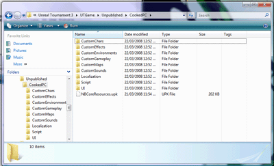
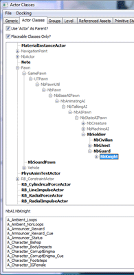
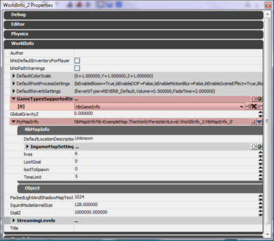

Setting up UT3 Editor for Nightblade
Immortius :: May 07, 2008
In order to create a map for Nightblade, you will need to first set up UT3 Editor to automatically load the Nightblade files.
1. Copy everything under .\My Games\Unreal Tournament 3\UTGame\Published\cookedPC\Nightblade to \My Games\Unreal Tournament 3\UTGame\UnPublished\cookedPC\

2. In your .\UTGame\Config\UTEditor.ini add or modify the [ModPackages] section to be as follows:
[ModPackages]
ModPackagesInPath=..\UTGame\Src
ModOutputDir=..\UTGame\Unpublished\CookedPC\Script
ModPackages=NbLowLevel
ModPackages=NightbladeMod
ModPackages=NbAI
-:-
Nightblade Resources
Immortius :: May 07, 2008
The first thing to note is that our packages are either prefixed with "Th" or "Nb". The "Th" packages contain content ported from Thievery, so they are relatively low quality. We are slowly replacing these over time. I wouldn't recommend using them. The "Nb" packages generally contain more recent content, either from our efforts to make Nightblade for UT2004, or updated and new content for UT3.
The CustomEnvironments directory contains all the static meshes and textures for use by maps. The CustomSounds directory contains all the Nightblade sounds, including ambient sounds and music that may be used in maps.
-:-
Setting Up a Map For Play
Immortius :: May 07, 2008
Once you have created a map, there are a couple of steps to making it playable ingame.
1. Add some player starts. Thieves use standard UT3 PlayerStarts at the moment, so place a few of these. Guards possess AI guards, so place some NbKnights in the map for them.

2. Open the World properties (reached through View->World Properties). In the WorldInfo tab you can set the map's Title and Author. Also in that tab is a GameTypesSupportedOnThisMap list, add an entry and select NbGameInfo. Finally you can set the MyMapInfo property to be a NbMapInfo, which can be used to configure various Nightblade-specific map settings, such as thief lives and the map time limit.

3. To test the map, run UT3 with the -UseUnpublished commandline option. This causes UT3 to use the contents of the Unpublished directory rather than the Published directory.
-:-
Publishing a Map
Immortius :: May 07, 2008
DGUnreal has written a great post on the steps involved in polishing and publishing an UT3 map, and most of it is relevant for Nightblade Maps as well.
It is worth noting that the cooking process bakes the Nightblade gametype into the map, meaning that the map will need to be re-cooked and released every time a new version of Nightblade is released. Alternatively you can just skip the cooking step and release the map in its uncooked state, which gets around this. The map will be much larger if you do that though.
-:-


{kind=link}
{kind=link}
{kind=link}